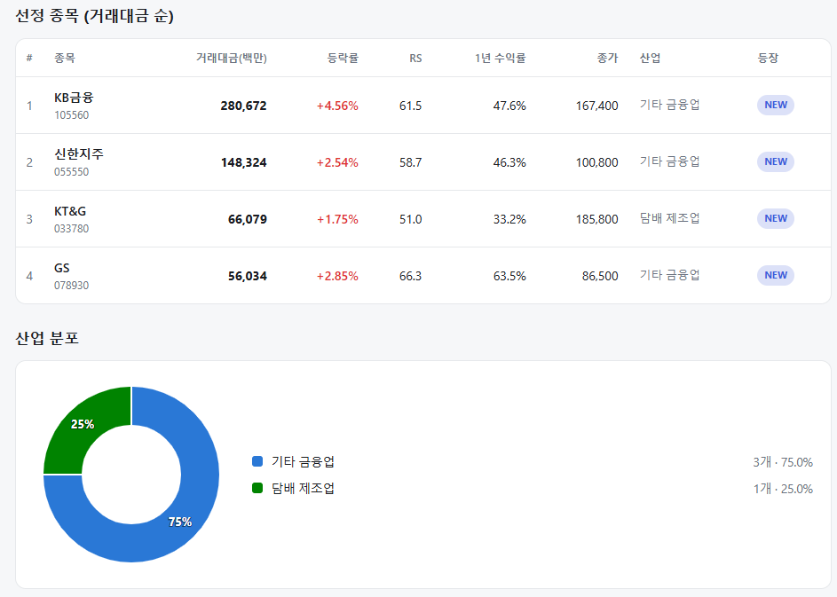
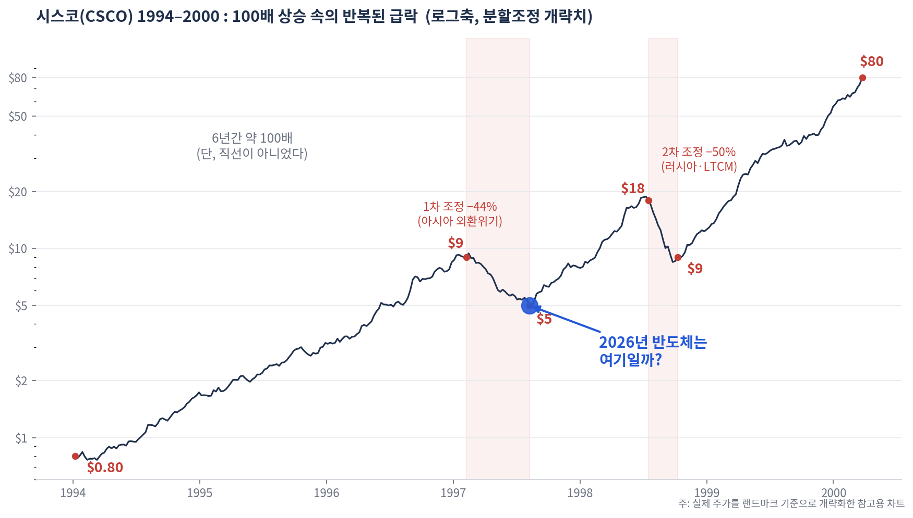
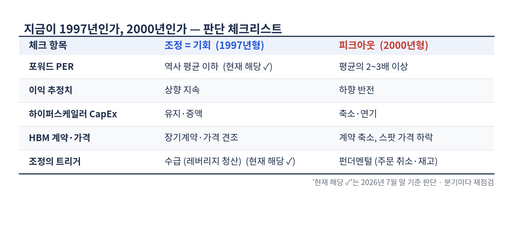

매일의 주도주 정리를 위해 기록합니다.
연속적으로 나온 종목들 또는 상승 후 조정받는 종목 위주로 리서치 해보시면 좋을 것 같습니다.

*오늘의 퀀트픽은 없습니다.
#주도섹터
주도/방어 섹터: 조선, 복합유틸리티 및 손해보험
주요 종목: HD한국조선해양(+10.00%), 대한조선(+9.61%), 일승(+11.85%), 한화오션(+6.17%), 삼성중공업(+5.15%), 지역난방공사(+6.09%), 한화손해보험(+7.21%), DB손해보험(+5.30%).
분석: 조선 테마(+6.59%) 및 업종(+5.00%)이 대형 조선사를 중심으로 상방 탄력을 나타냈습니다. HD한국조선해양(+10.00%)과 한화오션(+6.17%) 등으로 기관·외인 매수세가 유입되었습니다. 복합유틸리티 업종(+6.09%)과 손해보험 업종(+4.70%) 역시 방어적 수급 축 역할을 수행했습니다.
#조정섹터
반도체 대형주 및 로봇 섹터
주요 종목: SK하이닉스(-6.71%, 종가 1,307,000원), 삼성전자(-1.44%, 종가 205,500원), NAVER(-3.62%), 티엑스알로보틱스(-15.00%), 엔젤로보틱스(-8.96%), 에스피지(-6.72%).
분석: SK하이닉스가 -6.71% 하락하며 테크 섹터의 매물 소화가 이어졌고, 삼성전자(-1.44%) 역시 약보합 흐름을 보였습니다. 전일 수급이 집중되었던 티엑스알로보틱스(-15.00%) 등 로봇 관련 자산군에서 단기 차익 실현 물량이 출회되었습니다.
#수급동향
코스피 지수는 전일 대비 -1.23% 하락한 5,593으로 마감했습니다. 코스닥 지수는 -2.70% 하향 조정된 644로 장을 마쳤습니다.
유가증권시장에서 외국인 투자자가 1조 3,414억 원, 기관 투자자가 663억 원을 순매수하며 저가 매수세를 집행했습니다. 반면 개인 투자자는 1조 4,301억 원을 순매도했습니다.
<시스코는 100배 오르는 동안 40%씩 무너졌다_2026년 반도체는 어디쯤일까>
반도체가 급락하고 있습니다. 코스피는 5월 8,000pt, 6월 9400선까지 반도체 주도로 수직 상승했다가, 7월 지속적인 투매가 나오고 있습니다. 상승 과정에서 쌓인 레버리지 자금이 청산되는 국면이죠. 이럴 때 꺼내볼 만한 과거 차트가 하나 있습니다. 1990년대의 시스코(CSCO)입니다.
100배의 여정, 그러나 직선이 아니었다
시스코는 1994년 약 0.80달러에서 2000년 초 80달러까지, 6년 만에 약 100배 올랐습니다. 인터넷이라는 신대륙에 라우터를 팔던 그 시대의 '곡괭이 장사'였으니까요. 그런데 그 여정에는 40~50%짜리 급락이 반복적으로 있었습니다.

9달러에서 5달러로 -44%(아시아 외환위기), 회복 후 18달러에서 9달러로 -50%(러시아·LTCM 사태). 매번 조정의 이유는 회사가 아니라 매크로 충격이었고, 인터넷 트래픽이라는 성장 스토리는 멀쩡했습니다. 그리고 두 번째 급락의 바닥 9달러에서 80달러까지, 마지막 9배 구간이 나왔습니다. 그때 판 사람들이 놓친 구간입니다.
차트의 파란 점이 이 글의 질문입니다. 2026년의 반도체는 파런점의, 사이클 중반의 조정 국면일까? 그렇게 볼 근거는 밸류에이션입니다. 마이크론의 포워드 PER은 5.4배로 1년래 최저이자 10년 평균(6.5배)마저 밑돌고, SK하이닉스도 포워드 PER 5.2 입니다. 2000년의 시스코가 PER 100배를 넘겼던 것과 달리, 지금의 조정은 '비싼 것의 붕괴'가 아니라 '싸지도 않던 것이 더 싸지는' 형태입니다. 조정의 트리거도 펀더멘털 훼손이 아니라 수급(레버리지 청산), 미국과 이란의 재충돌, 높은 금리 등 외부요인 이라는 점에서 1997년과 닮았습니다.
다만, 반도체는 사이클 산업이다
이 비유를 그대로 믿기 어려운 이유가 하나 있습니다. 메모리는 명시적인 사이클 산업입니다. 호황이 오면 3사가 일제히 증설하고, 공급이 수요를 넘는 순간 가격이 무너집니다. 2018~19년 다운턴에서 SK하이닉스 영업이익은 20조원대에서 2조원대로 급감했고, 2022~23년에는 분기 적자까지 갔습니다. 반도체의 40% 하락은 '성장 스토리 속의 조정'이었던 적도 있지만 '사이클 피크아웃의 시작'이었던 적도 많다는 뜻입니다. 시스코조차 결국은 통신사 CapEx 사이클이었음이 2001년에 드러났습니다. "이번엔 수요가 구조적"이라는 믿음이 가장 강할 때가 꼭대기였다는 건 그때나 지금이나 유효한 경고입니다.
대전제: HBM·D램 수요가 '계속' 있어야 한다
결국 시스코 시나리오(바닥에서의 마지막 대상승)가 성립하려면 전제는 하나입니다. AI가 만드는 HBM·D램 수요가 앞으로도 수년간 공급 증가를 계속 흡수해줘야 한다는 것. 구체적으로는
① 추론(inference) 수요와 토큰 소비의 지속적 증가, ② 하이퍼스케일러 CapEx의 유지 ③ 2026~27년 HBM 증설 러시 속에서의 공급 규율입니다. 셋이 유지되면 지금은 1997년형 조정이고, 하나라도 무너지면 과거 다운턴처럼 60~70% 하락도 열어둬야 합니다.
무엇을 보고 판단할 것인가

지금 채점하면 밸류에이션과 트리거는 1997년형, 이익 추정치와 CapEx는 아직 유효하지만 분기마다 재확인이 필요합니다.
첫 균열은 HBM 계약과 가격에서 나올 가능성이 높아 제가 가장 자주 볼 지표입니다.
이부분은 주기적으로 업데이트 하도록 하겠습니다.
오늘 하루도 수고하셨습니다!